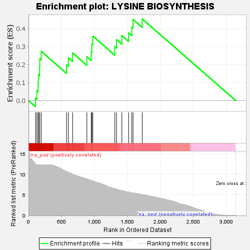
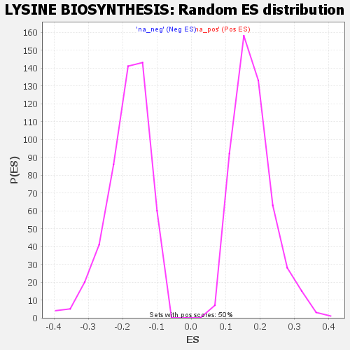

| | | Dataset | GSEA RNK clr Maaslin2 MucosalvsLuminal KO - DistalColon.rnk |
| Phenotype | NoPhenotypeAvailable |
| Upregulated in class | na_pos |
| GeneSet | LYSINE BIOSYNTHESIS |
| Enrichment Score (ES) | 0.45390525 |
| Normalized Enrichment Score (NES) | 2.52448 |
| Nominal p-value | 0.0 |
| FDR q-value | 1.018237E-4 |
| FWER p-Value | 0.001 |
Table: GSEA Results Summary

Fig 1: Enrichment plot: LYSINE BIOSYNTHESIS
Profile of the Running ES Score & Positions of GeneSet Members on the Rank Ordered List

Fig 2: LYSINE BIOSYNTHESIS: Random ES distribution
Gene set null distribution of ES for LYSINE BIOSYNTHESIS